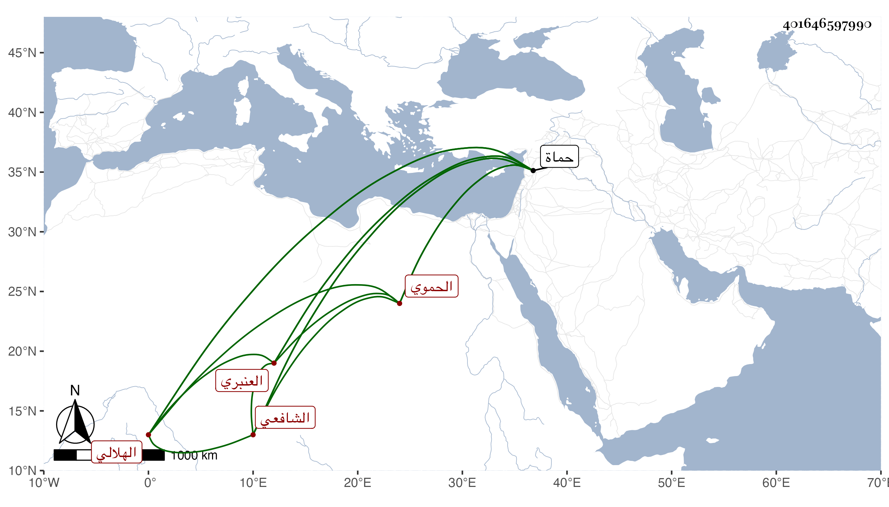

0902Sakhawi.DawLamic.ITO20230111-ara1.EIS1600.401646597990
Biography ID: 401646597990
235
عمر بن أحمد بن علي بن محمود بن نجم بن هلال بن ظاعن بمعجمة ابن دغير بمهملة ثم معجمة مصغر السراج الهلالي الحموي الشافعي العنبري ويعرف بابن الخدر بمعجمة مفتوحة ثم مهملتين أولاهما مكسورة أخو علي ومحمد وهذا الأصغر . ولد في سنة ست عشرة وثمانمائة بحماة ونشأ بها فحفظ القرآن وبعض المنهاج واشتغل في الميقات وباشر رياسة الجامع الكبير ببلده ، وتولع بالنظم وعمل مجموعا سماه العرائس الخدرية والنفحات العنبرية فكانت تسمية لطيفة . لقيته بحماة فكتبت عنه من نظمه أشياء منها :
| رب شريف سألت منه | ما الذي في صفاء خدك |
| فقال خال فقلت عمك | بالحسن يا بني وحق جدك |
